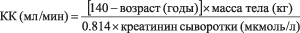

|
 |
| ПЕРИНДОПРИЛ ПЛЮС (PERINDOPRIL PLUS) indapamide, perindopril таб. | ||||||||||||||||||||||||||||||||||||||||||||||||||||||||||||||||||||||||||||||||||||||||||||||||||||||||||||||||||||||||||||||||||||||||||||||||||||||||||||||||||||||||||||||||||||||||||||||||||||||||||||||||||||||||||||||||||||||||||||||||||||||||||||||||||||||||||||||||||||||||||||||||||||||||||||||||||||||||||||||||||||||||||||||
|
Клинико-фармакологическая группа: Антигипертензивный препарат Номер и дата регистрации: ЛП-005069 от 24.09.18 Код ATX: C09BA04 |
Владелец регистрационного удостоверения: зарегистрировано и произведено Представительство: | |||||||||||||||||||||||||||||||||||||||||||||||||||||||||||||||||||||||||||||||||||||||||||||||||||||||||||||||||||||||||||||||||||||||||||||||||||||||||||||||||||||||||||||||||||||||||||||||||||||||||||||||||||||||||||||||||||||||||||||||||||||||||||||||||||||||||||||||||||||||||||||||||||||||||||||||||||||||||||||||||||||||||||||
Форма выпуска, состав и упаковка Таблетки белого или почти белого цвета, круглые, плоскоцилиндрические, с фаской.
Вспомогательные вещества: целлюлоза микрокристаллическая 102 - 70.375 мг, кроскармеллоза натрия (примеллоза) - 3 мг, крахмал кукурузный прежелатинизированный (крахмал 1500) - 20 мг, натрия гидрокарбонат - 2 мг, магния стеарат - 1 мг, кремния диоксид коллоидный безводный (аэросил безводный) - 1 мг. 10 шт. - упаковки контурные ячейковые (3) - пачки картонные. Таблетки белого или почти белого цвета, круглые, плоскоцилиндрические, с фаской и риской с одной стороны.
Вспомогательные вещества: целлюлоза микрокристаллическая 102 - 70.75 мг, кроскармеллоза натрия (примеллоза) - 3 мг, крахмал кукурузный прежелатинизированный (крахмал 1500) - 15 мг, натрия гидрокарбонат - 4 мг, магния стеарат - 1 мг, кремния диоксид коллоидный безводный (аэросил безводный) - 1 мг. 10 шт. - упаковки контурные ячейковые (3) - пачки картонные. Таблетки белого или почти белого цвета, круглые, плоскоцилиндрические, с фаской.
Вспомогательные вещества: целлюлоза микрокристаллическая 102 - 141.5 мг, кроскармеллоза натрия (примеллоза) - 6 мг, крахмал кукурузный прежелатинизированный (крахмал 1500) - 30 мг, натрия гидрокарбонат - 8 мг, магния стеарат - 2 мг, кремния диоксид коллоидный безводный (аэросил безводный) - 2 мг. 10 шт. - упаковки контурные ячейковые (3) - пачки картонные. | ||||||||||||||||||||||||||||||||||||||||||||||||||||||||||||||||||||||||||||||||||||||||||||||||||||||||||||||||||||||||||||||||||||||||||||||||||||||||||||||||||||||||||||||||||||||||||||||||||||||||||||||||||||||||||||||||||||||||||||||||||||||||||||||||||||||||||||||||||||||||||||||||||||||||||||||||||||||||||||||||||||||||||||||
| ||||||||||||||||||||||||||||||||||||||||||||||||||||||||||||||||||||||||||||||||||||||||||||||||||||||||||||||||||||||||||||||||||||||||||||||||||||||||||||||||||||||||||||||||||||||||||||||||||||||||||||||||||||||||||||||||||||||||||||||||||||||||||||||||||||||||||||||||||||||||||||||||||||||||||||||||||||||||||||||||||||||||||||||
Описание препарата основано на официально утвержденной инструкции по применению и утверждено компанией-производителем для издания 2023 г. | ||||||||||||||||||||||||||||||||||||||||||||||||||||||||||||||||||||||||||||||||||||||||||||||||||||||||||||||||||||||||||||||||||||||||||||||||||||||||||||||||||||||||||||||||||||||||||||||||||||||||||||||||||||||||||||||||||||||||||||||||||||||||||||||||||||||||||||||||||||||||||||||||||||||||||||||||||||||||||||||||||||||||||||||
Фармакологическое действие |
Фармакокинетика |
Показания |
Режим дозирования |
Побочное действие |
Противопоказания |
Беременность и лактация |
Особые указания |
Передозировка |
Лекарственное взаимодействие |
Условия хранения и сроки годности |
Условия реализации
Фармакологическое действие
Лекарственный препарат Периндоприл Плюс - комбинированный препарат, содержащий индапамид и периндоприла эрбумин. Фармакологические свойства лекарственного препарата Периндоприл Плюс сочетают в себе отдельные свойства каждого из его активных компонентов. Механизм действия Периндоприл Плюс Комбинация индапамида и периндоприла усиливает антигипертензивное действие каждого из них. Периндоприл Периндоприл - ингибитор фермента, превращающего ангиотензин I в ангиотензин II (ингибитор АПФ). АПФ, или кининаза II, является экзопептидазой, которая осуществляет как превращение ангиотензина I сосудосуживающее вещество ангиотензин II, так и разрушение брадикинина, обладающего сосудорасширяющим действием, до неактивного гептапептида. В результате периндоприл:
Эти эффекты не сопровождаются задержкой ионов натрия и жидкости или развитием рефлекторной тахикардии. Периндоприл нормализует работу миокарда, снижая преднагрузку и постнагрузку. При изучении показателей гемодинамики у пациентов с хронической сердечной недостаточностью (ХСН) было выявлено:
Индапамид Индапамид относится к группе сульфонамидов, по фармакологическим свойствам близок к тиазидным диуретикам. Индапамид ингибирует реабсорбцию ионов натрия в кортикальном сегменте петли Генле, что приводит к увеличению выведения почками ионов натрия, хлора и в меньшей степени ионов натрия и магния, усиливая тем самым диурез, и снижая АД. Антигипертензивное действие Периндоприл Плюс Лекарственный препарат Периндоприл Плюс оказывает дозозависимое антигипертензивное действие, как на диастолическое, так и на систолическое АД как в положении "стоя", так и "лежа". Антигипертензивное действие сохраняется в течение 24 ч. Стабильный терапевтический эффект развивается менее чем через 1 месяц от начала терапии и не сопровождается тахифилаксией. Прекращение лечения не вызывает синдрома "отмены". Лекарственный препарат Периндоприл Плюс уменьшает степень гипертрофии левого желудочка (ГЛЖ), улучшает эластичность артерий, снижает ОПСС, не влияет на метаболизм липидов (общий холестерин, ЛПВП и ЛПНП, триглицериды). Доказано влияние применения комбинации периндоприла и индапамида на ГЛЖ в сравнении с эналаприлом. У пациентов с артериальной гипертензией и ГЛЖ, получавших терапию периндоприлом эрбумином 2 мг/индапамидом 0.625 мг или эналаприлом в дозе 10 мг 1 раз/сут, и при увеличении дозы периндоприла эрбумина до 8 мг и индапамида до 2.5 мг, или эналаприла до 40 мг 1 раз/сут, отмечено более значимое снижение индекса массы левого желудочка (ИМЛЖ) в группе периндоприл/индапамид по сравнению с группой эналаприла. При этом наиболее значимое влияние на ИМЛЖ отмечается при применении периндоприла эрбумина 8 мг/индапамида 2.5 мг. Также отмечено более выраженное антигипертензивное действие на фоне комбинированной терапии периндоприлом и индапамидом по сравнению с эналаприлом. Периндоприл Периндоприл эффективен в терапии артериальной гипертензии любой степени тяжести. Антигипертензивное действие препарата достигает максимума через 4-6 ч после однократного приема внутрь и сохраняется в течение 24 ч. Через 24 ч после приема препарата наблюдается выраженное (порядка 80%) остаточное ингибирование АПФ. Периндоприл оказывает антигипертензивное действие у пациентов, как с низкой, так и с нормальной активностью ренина в плазме крови. Одновременное назначение тиазидных диуретиков усиливает выраженность антигипертензивного действия. Кроме этого, комбинирование ингибитора АПФ и тиазидного диуретика также приводит к снижению риска гипокалиемии на фоне приема диуретиков. Двойная блокада ренин-ангиотензин-альдостероновой системы (РААС). Имеются данные клинических исследований комбинированной терапии с применением ингибитора АПФ с антагонистами рецепторов ангиотензина II (АРА II). Проводились клинические исследования с участием пациентов, имеющих в анамнезе сердечно-сосудистое или цереброваскулярное заболевание, либо сахарный диабет 2 типа, сопровождающийся подтвержденным поражением органа-мишени, а также исследования с участием пациентов с сахарным диабетом 2 типа и диабетической нефропатией. Данные исследования не выявили у пациентов, получавших комбинированную терапию, значимого положительного влияния на возникновение почечных и/или кардиоваскулярных событий и на показатели смертности, в то время как риск развития гиперкалиемии, острой почечной недостаточности и/или артериальной гипотензии увеличивался по сравнению с пациентами, получавшими монотерапию. Принимая во внимание схожие внутригрупповые фармакодинамические свойства ингибиторов АПФ и АРА II, данные результаты можно ожидать для взаимодействия любых других препаратов, представителей классов ингибиторов АПФ и АРА II. Поэтому противопоказано применение ингибиторов АПФ в сочетании с антагонистами рецепторов ангиотензина II у пациентов с диабетической нефропатией. Имеются данные клинического исследования по изучению положительного влияния от добавления алискирена к стандартной терапии ингибитором АПФ или АРА II у пациентов с сахарным диабетом 2 типа и хроническим заболеванием почек или сердечно-сосудистым заболеванием, либо имеющих сочетание этих заболеваний. Исследование было прекращено досрочно в связи с возросшим риском возникновения нежелательных исходов. Сердечно-сосудистая смерть и инсульт возникали чаще в группе пациентов, получающих алискирен, по сравнению с группой плацебо. Также нежелательные явления и серьезные нежелательные явления особого интереса (гиперкалиемия, артериальная гипотензия и нарушения функции почек) регистрировались чаще в группе алискирена, чем в группе плацебо. Индапамид Антигипертензивное действие проявляется при применении препарата в дозах, оказывающих минимальное диуретическое действие. Антигипертензивное действие индапамида связано с улучшением эластических свойств крупных артерий, уменьшением ОПСС. Индапамид уменьшает ГЛЖ, не влияет на концентрацию липидов в плазме крови: триглицеридов, общего холестерина, ЛПНП, ЛПВП; углеводный обмен (в т.ч. у пациентов с сопутствующим сахарным диабетом). Фармакокинетика
Периндоприл Плюс Комбинированное применение периндоприла и индапамида не изменяет их фармакокинетические параметры по сравнению с раздельным приемом этих препаратов. Периндоприл После приема внутрь быстро всасывается из ЖКТ. Биодоступность составляет 65-70%. Прием пищи уменьшает превращение периндоприла в периндоприлат. T1/2 периндоприла из плазмы крови составляет 1 ч. Cmax в плазме крови достигается через 3-4 ч после приема внутрь. Поскольку прием с пищей уменьшает превращение периндоприла в периндоприлат и биодоступность препарата, периндоприл необходимо принимать 1 раз/сут утром, перед завтраком. При применении периндоприла 1 раз/сут Css достигается в течение 4 дней. В печени подвергается метаболизму с образование активного метаболита периндоприлата. Помимо активного метаболита периндоприлата, периндоприл образует еще 5 неактивных метаболитов. Связь с белками плазмы крови периндоприлата дозозависима и составляет 20%. Периндоприлат легко проходит через гистогематические барьеры, исключая гематоэнцефалический барьер, незначительное количество проникает через плаценту и в грудное молоко. Выводится почками, T1/2 периндоприлата составляет около 17 ч. Не кумулирует. У пациентов пожилого возраста, у пациентов с почечной и сердечной недостаточностью выведение периндоприлата замедлено. При почечной недостаточности рекомендуется снижать дозу периндоприла в зависимости от степени тяжести почечной недостаточности (КК). Диализный клиренс периндоприлата составляет 70 мл/мин. Кинетика периндоприла изменена у пациентов с циррозом печени: печеночный клиренс снижен наполовину. Тем не менее, количество образующегося периндоприлата не уменьшается, что не требует коррекции дозы. Индапамид Быстро и практически полностью всасывается в ЖКТ. Прием пищи несколько замедляет всасывание, но существенно не влияет на количество абсорбированного индапамида. Cmax в плазме крови достигается через 1 ч после приема внутрь однократной дозы. Связывание с белками плазмы крови составляет 79%. T1/2 составляет от 14 до 24 ч (в среднем, 18 ч). Не кумулирует. Метаболизируется в печени. Выводится почками (70%) преимущественно в виде метаболитов (фракция неизмененного препарата составляет около 5%) и через кишечник с желчью в виде неактивных метаболитов (22%). У пациентов с почечной недостаточностью фармакокинетические параметры индапамида существенно не изменяются. Режим дозирования
Внутрь, 1 раз/сут, предпочтительно в утренние часы до завтрака, запивая достаточным количеством жидкости. По возможности прием препарата следует начинать с подбора доз однокомпонентных препаратов. В случае клинической необходимости возможно назначение комбинированной терапии препаратом Периндоприл Плюс сразу после монотерапии одним из входящих в состав препарата компонентов (периндоприла и индапамида). Дозы приводятся для соотношения индапамид/периндоприл. Начальная доза - по 1 таблетке препарата Периндоприл Плюс (0.625 мг/2 мг) 1 раз/сут. Если через 1 месяц приема препарата не удается добиться адекватного контроля АД, дозу препарата следует увеличить до 1 таблетки препарата Периндоприл Плюс (1.25 мг/4 мг) 1 раз/сут. При необходимости для достижения более выраженного гипотензивного эффекта возможно увеличение дозы препарата до максимальной суточной дозы препарата Периндоприл Плюс - 1 таблетка (2.5 мг/8 мг) 1 раз/сут. Пациенты пожилого возраста Начальная доза - 1 таблетка по 0.625 мг/2 мг препарата Периндоприл Плюс 1 раз/сут. Начинать терапию препаратом следует под контролем функции почек и АД. Пациенты с нарушением функции почек Препарат Периндоприл Плюс пациентам с тяжелой почечной недостаточностью (КК менее 30 мл/мин противопоказан. Пациентам с умеренно выраженной почечной недостаточностью (КК 30-60 мл/мин) рекомендуется начинать терапию с необходимых доз препаратов (в качестве монотерапии), входящих в состав препарата Периндоприл Плюс; максимальная суточная доза препарата Периндоприл Плюс 1.25 мг/4 мг. Пациентам с КК 60 мл/мин и более коррекция дозы не требуется. На фоне терапии необходимо регулярно контролировать концентрацию креатинина и содержание калия в сыворотке крови. Пациенты с нарушением функции печени Препарат противопоказан пациентам с тяжелой печеночной недостаточностью. При умеренно выраженной печеночной недостаточности коррекции доз не требуется. Дети и подростки Препарат Периндоприл Плюс не следует применять у детей и подростков до 18 лет, т.к. данные по эффективности и безопасности недостаточны. Побочное действие
а. Общие данные о профиле безопасности Периндоприл оказывает ингибирующее действие на РААС и уменьшает выведение ионов калия почками на фоне приема индапамида. Гипокалиемия (содержание калия менее 3.4 ммоль/л) развивается у 6% пациентов на фоне применения лекарственного препарата Периндоприл Плюс. Наиболее частыми побочными эффектами являются: • для периндоприла: головокружение, головная боль, парестезия, дисгевзия (извращение вкуса), нарушение зрения, вертиго, звон в ушах, гипотензия, кашель, одышка, боль в животе, запор, диспепсия, диарея, тошнота, рвота, зуд, кожная сыпь, спазмы мышц и астения. • для индапамида: реакции гиперчувствительности, в основном кожные, у пациентов, предрасположенных к аллергическим и астматическим реакциям, и макуло-папулезная сыпь. б. Табличный список побочных эффектов Частота побочных реакций, наблюдавшихся во время клинических исследований и/или при постмаркетинговом наблюдении, приведена в виде следующей градации: очень часто (≥1/10); часто (≥1/100, <1/10); нечасто (≥1/1000, <1/100); редко (≥1/10000, <1/1000); очень редко (<1/10000); частота неизвестна (на основании имеющихся данных оценить невозможно).
* Оценка частоты нежелательных реакций, выявленных по спонтанным сообщениям, проведена на основании данных результатов клинических исследований. Противопоказания
Периндоприл
Индапамид
Индапамид + Периндоприл
С осторожностью Системные заболевания соединительной ткани (в т.ч. системная красная волчанка, склеродермия); терапия иммунодепрессантами (риск развития нейтропении, агранулоцитоза); совместное применение с препаратами лития, препаратами золота, НПВП, баклофеном, кортикостероидами, препаратами, которые могут вызвать удлинение интервала QT, лекарственными препаратами, которые могут вызывать полиморфную желудочковую тахикардию типа "пируэт", кроме не антиаритмических лекарственных средств (см. раздел "Противопоказания"); угнетение костномозгового кроветворения; сниженный ОЦК (прием диуретиков, бессолевая диета, рвота, диарея); ИБС; цереброваскулярные заболевания; нарушения функции печени и почек; реноваскулярная гипертензия; сахарный диабет; хроническая сердечная недостаточность (IV функционального класса по классификации NYHA); гиперурикемия (особенно сопровождающаяся подагрой и уратным нефролитиазом); лабильность АД; пожилой возраст; проведение гемодиализа с применением высокопроточных мембран (например, AN69®) или десенсибилизация, аферез ЛПНП; состояние после трансплантации почки; планируемая анестезия; стеноз аортального клапана/гипертрофическая обструктивная кардиомиопатия; атеросклероз; представители негроидной расы (менее выраженный эффект от применения); спортсмены (возможна положительная реакция при допинг-контроле), двусторонний стеноз почечных артерий или наличие только одной функционирующей почки, сопутствующая терапия калийсберегающими диуретиками, препаратами калия или у пациентов с повышенным содержанием калия в плазме. Применение при беременности и кормлении грудью
Периндоприл Плюс противопоказан при беременности. Периндоприл Плюс противопоказан в период грудного вскармливания. Необходимо оценить значимость терапии для матери и принять решение о прекращении грудного вскармливания или о прекращении приема препарата. Беременность Периндоприл Соответствующих контролируемых исследований по применению ингибиторов АПФ у беременных не проводилось. В настоящий момент нет убедительных эпидемиологических данных о тератогенном риске при приеме ингибиторов АПФ в первом триместре беременности, однако некоторое увеличение риска нарушений развития плода исключить нельзя. При планировании беременности следует отменить лекарственный препарат и назначить другие антигипертензивные средства, разрешенные для применения при беременности. При выявлении беременности следует немедленно прекратить терапию ингибиторами АПФ и при необходимости назначить другую терапию. Известно, что воздействие ингибиторов АПФ на плод во II и III триместрах беременности может приводить к нарушению его развития (снижение функции почек, олигогидрамнион, замедление оссификации костей черепа) и развитию осложнений у новорожденного (почечная недостаточность, артериальная гипотензия, гиперкалиемия). Если пациентка получала ингибиторы АПФ во время II или III триместра беременности, рекомендуется провести УЗИ плода для оценки состояния черепа и функции почек. У новорожденных, матери которых получали терапию ингибиторами АПФ, может наблюдаться артериальная гипотензия, в связи с чем, новорожденные должны находиться под тщательным медицинским контролем. Индапамид Данные о применении индапамида у беременных женщин отсутствуют или ограничены (менее 300 случаев). Длительное применение тиазидных диуретиков в III триместре беременности может вызывать гиповолемию у матери и снижение маточно-плацентарного кровотока у матери, что приводит к фетоплацентарной ишемии и задержке развития плода. Исследования на животных не выявили прямого или непрямого токсического действия на репродуктивную функцию. В качестве меры предосторожности рекомендуется избегать применения индапамида во время беременности. Период грудного вскармливания Лекарственный препарат Периндоприл Плюс противопоказан в период грудного вскармливания. Периндоприл В настоящий момент не установлено, выделяется ли периндоприл с грудным молоком. Ввиду отсутствия информации, касающейся применения периндоприла в период грудного вскармливания, его прием не рекомендован, предпочтительно применять другие препараты с более изученным профилем безопасности, особенно при кормлении новорожденных и недоношенных детей. Индапамид В настоящий момент нет достоверной информации о выделении индапамида или его метаболитов с грудным молоком. У новорожденного может развиться повышенная чувствительность к производным сульфонамида и гипокалиемия. Риск для новорожденных/младенцев нельзя исключать. Индапамид близок по структуре к тиазидным диуретикам, прием которых вызывает уменьшение количества грудного молока или подавление лактации. Индапамид противопоказан в период грудного вскармливания. Фертильность Общее для периндоприла и индапамида Изучение репродуктивной токсичности показало отсутствие влияния на фертильность у крыс обоего пола. Предположительно влияние на фертильность у человека отсутствует. Особые указания
Общие для периндоприла и индапамида Нарушение функции почек Терапия противопоказана пациентам с умеренной и тяжелой почечной недостаточностью (КК менее 60 мл/мин). У некоторых пациентов с артериальной гипертензией без предшествующего очевидного нарушения функции почек на фоне терапии могут появиться лабораторные признаки функциональной почечной недостаточности. В этом случае лечение следует прекратить. В дальнейшем можно возобновить комбинированную терапию, применяя низкие дозы комбинации индапамида и периндоприла, либо применять только один из препаратов. Таким пациентам необходим регулярный контроль содержания калия и концентрации креатинина в сыворотке крови - через 2 недели после начала терапии и в дальнейшем каждые 2 месяца. Почечная недостаточность чаще возникает у пациентов с тяжелой хронической сердечной недостаточностью или исходным нарушением функции почек, в т.ч. при стенозе почечной артерии. Лекарственный препарат Периндоприл Плюс не рекомендуется в случаях двустороннего стеноза почечных артерий или стеноза артерии единственной функционирующей почки. Артериальная гипотензия и нарушение водно-электролитного баланса В случае исходной гипонатриемии существует риск внезапного развития артериальной гипотензии, особенно у пациентов со стенозом почечной артерии. Поэтому при динамическом наблюдении за пациентами следует обращать внимание на возможные симптомы обезвоживания и снижения содержания электролитов в плазме крови, например, после диареи или рвоты. Таким пациентам необходим регулярный контроль содержания электролитов плазмы крови. При выраженной артериальной гипотензии может потребоваться в/в введение 0.9% раствора натрия хлорида. Транзиторная артериальная гипотензия не является противопоказанием для продолжения терапии. После восстановления объема циркулирующей крови и АД можно возобновить терапию, применяя низкие дозы препаратов, либо применять только один из препаратов. Содержание калия Комбинированное применение периндоприла и индапамида не предотвращает развитие гипокалиемии, особенно у пациентов с сахарным диабетом или почечной недостаточностью. Как и в случае применения любого гипотензивного препарата и диуретика, необходим регулярный контроль содержания калия в плазме крови. Вспомогательные вещества Следует учитывать, что в состав вспомогательных веществ препарата входит лактозы моногидрат. Не следует назначать лекарственный препарат Периндоприл Плюс пациентам с наследственной непереносимостью галактозы, лактазной недостаточностью и глюкозо-галактозной мальабсорбцией. Препараты лития Одновременное применение лекарственного препарата Периндоприл Плюс с препаратами лития не рекомендуется. Детский возраст Препарат не следует назначать детям и подросткам в возрасте до 18 лет из-за отсутствия данных об эффективности и безопасности применения индапамида и периндоприла, как раздельно, так и совместно, у пациентов данной возрастной группы. Периндоприл Двойная блокада РААС Имеются данные об увеличении риска возникновения артериальной гипотензии, гиперкалиемии и нарушении функции почек (включая острую почечную недостаточность) при одновременном применении ингибиторов АПФ с АРА II или алискиреном. Поэтому двойная блокада РААС посредством сочетания ингибитора АПФ с АРА II или алискиреном не рекомендуется. Если двойная блокада абсолютно необходима, то это должно выполняться под строгим контролем специалиста при регулярном контроле функции почек, содержания электролитов в плазме крови и АД. Применение ингибиторов АПФ в сочетании с антагонистами рецепторов АРА II противопоказано у пациентов с диабетической нефропатией и не рекомендуется у других пациентов. Калийсберегающие диуретики, препараты калия, калийсодержащие заменители пищевой соли и пищевые добавки Не рекомендуется одновременное назначение периндоприла и калийсберегающих диуретиков, а также препаратов калия, калийсодержащих заменителей пищевой соли и пищевых добавок. Нейтропения/агранулоцитоз/тромбоцитопения Имеются сообщения о развитии нейтропении/агранулоцитоза, тромбоцитопении и анемии на фоне приема ингибиторов АПФ. У пациентов с нормальной функцией почек и без сопутствующих факторов риска нейтропения возникает редко. С крайней осторожностью следует применять периндоприл на фоне системных заболеваний соединительной ткани (в т.ч. системной красной волчанки, склеродермии), а также, на фоне приема иммунодепрессантов, аллопуринола или прокаинамида, или при сочетании этих факторов, особенно у пациентов с исходно нарушенной функцией почек. У некоторых пациентов возникали тяжелые инфекционные заболевания, в ряде случаев, устойчивые к интенсивной антибиотикотерапии. При назначении периндоприла таким пациентам рекомендуется периодически контролировать число лейкоцитов в крови. Пациенты должны сообщать врачу о любых признаках инфекционных заболеваний (например, боль в горле, лихорадка). Анемия Анемия может развиваться у пациентов после трансплантации почки или у лиц, находящихся на гемодиализе. При этом снижение гемоглобина тем больше, чем выше был его первоначальный показатель. Этот эффект, по-видимому, не является дозозависимым, но может быть связан с механизмом действия ингибиторов АПФ. Незначительное снижение гемоглобина происходит в течение первых 6 месяцев, затем он остается стабильным и полностью восстанавливается после отмены препарата. У таких пациентов лечение может быль продолжено, однако гематологические анализы должны проводиться регулярно. Повышенная чувствительность/ангионевротический отек При приеме ингибиторов АПФ, в т.ч. и периндоприла, в редких случаях может наблюдаться развитие ангионевротического отека лица, конечностей, губ, языка, голосовых складок и/или гортани. Это может произойти в любой период терапии. При появлении симптомов прием лекарственного препарата Периндоприл Плюс должен быть немедленно прекращен, а пациент должен наблюдаться до тех пор, пока признаки отека не исчезнут полностью. Если отек затрагивает только лицо и губы, то он обычно проходит самостоятельно, хотя в качестве симптоматической терапии могут применяться антигистаминные препараты. Ангионевротический отек, сопровождающийся отеком гортани, может привести к летальному исходу. Отек языка, голосовых складок или гортани может привести к обструкции дыхательных путей. При появлении таких симптомов следует немедленно начать проводить соответствующую терапию, например, ввести п/к эпинефрин (адреналин) в разведении 1:1000 (0.3-0.5 мл) и/или обеспечить проходимость дыхательных путей. Сообщалось о более высоком риске развития ангионевротического отека у пациентов негроидной расы. У пациентов, в анамнезе которых отмечался ангионевротический отек, не связанный с приемом ингибиторов АПФ, может быть повышен риск его развития при приеме препаратов этой группы. В редких случаях на фоне терапии ингибиторами АПФ развивается ангионевротический отек кишечника. При этом у пациентов отмечалась боль в животе как изолированный симптом или в сочетании с тошнотой и рвотой, в некоторых случаях без предшествующего ангионевротического отека лица и при нормальном уровне С-1 эстеразы. Диагноз устанавливался с помощью компьютерной томографии брюшной полости, УЗИ или в момент хирургического вмешательства. Симптомы проходили после прекращения приема ингибиторов АПФ. Поэтому у пациентов с болью в области живота, получающих ингибиторы АПФ, при проведении дифференциальной диагностики необходимо учитывать возможность развития ангионевротического отека кишечника. Ингибиторы mTOR (мишени рапамицина млекопитающих) (например, сиролимус, эверолимус, темсиролимус) У пациентов, одновременно получающих терапию ингибиторами mTOR, может повышаться риск развитии ангионевротического отека (в т.ч. отека дыхательных путей или языка с/без нарушениями функции дыхания). Анафилактоидные реакции при проведении десенсибилизации Имеются отдельные сообщения о развитии длительных, угрожающих жизни анафилактоидных реакций у пациентов, получающих ингибиторы АПФ во время десенсибилизирущей терапии ядом перепончатокрылых насекомых (пчелы, осы). Ингибиторы АПФ необходимо применять с осторожностью у склонных к аллергическим реакциям пациентов, проходящих процедуры десенсибилизации. Следует избегать назначения ингибитора АПФ пациентам, получающим иммунотерапию ядом перепончатокрылых насекомых. Тем не менее, анафилактоидной реакции можно избежать путем временной отмены ингибитора АПФ не менее, чем за 24 ч до начала процедуры десенсибилизации. Анафилактоидные реакции при проведении афереза ЛПНП В редких случаях у пациентов, получающих ингибиторы АПФ, при проведении афереза ЛПНП с применением декстрана сульфата развивались угрожающие жизни анафилактоидные реакции. Для предотвращения анафилактоидной реакции следует временно прекращать терапию ингибитором АПФ перед каждой процедурой афереза. Гемодиализ У пациентов, получающих ингибиторы АПФ, при проведении гемодиализа с применением высокопроточных мембран (например, AN69®) были отмечены анафилактоидные реакции. Поэтому желательно применять мембрану другого типа или применять гипотензивное средство другой фармакотерапевтической группы. Кашель На фоне терапии ингибитором АПФ может отмечаться сухой упорный кашель, который исчезает после отмены препаратов этой группы и исчезает после их отмены. При появлении у пациента сухого кашля следует помнить о возможном ятрогенном характере этого симптома. Если лечащий врач считает, что терапия ингибитором АПФ необходима пациенту, возможно продолжение приема препарата. Риск артериальной гипотензии и/или почечной недостаточности (в т.ч. у пациентов с сердечной недостаточностью, нарушением водно-электролитного баланса) При некоторых патологических состояниях может отмечаться значительная активация РААС, особенно при выраженной гиповолемии и снижении содержания электролитов в плазме крови (на фоне бессолевой диеты или длительного приема диуретиков), у пациентов с исходно низким АД, стенозом почечной артерии, хронической сердечной недостаточностью или циррозом печени с отеками и асцитом. Применение ингибиторов АПФ вызывает блокаду РААС и поэтому может сопровождаться резким снижением АД и/или повышением концентрации креатинина в плазме крови, свидетельствующим о развитии функциональной почечной недостаточности. Эти явления чаще наблюдаются при приеме первой дозы препарата и в течение первых 2 недель терапии. В редких случаях эти состояния развиваются остро и в другие сроки терапии. В таких случаях рекомендуется возобновлять терапию в более низкой дозе и затем постепенно увеличивать дозу. Пожилой возраст Перед началом приема периндоприла необходимо оценить функциональную активность почек и содержание ионов калия в плазме крови. В начале терапии дозу препарата подбирают, учитывая степень снижения АД, особенно в случае обезвоживания и потери электролитов. Подобные меры позволяют избежать резкого снижения АД. Атеросклероз Риск артериальной гипотензии существует у всех пациентов, однако особую осторожность следует соблюдать, применяя препарат у пациентов с ишемической болезнью сердца и недостаточностью мозгового кровообращения. У таких пациентов лечение следует начинать с низких доз препарата. Реноваскулярная гипертензия Методом лечения реноваскулярной гипертензии является реваскуляризация. Тем не менее, применение ингибиторов АПФ может оказывать положительное действие у данной категории пациентов, как ожидающих оперативного вмешательства, так и в том случае, когда хирургическое вмешательство провести невозможно. Лечение лекарственным препаратом Периндоприл Плюс не показано у пациентов с диагностированным или предполагаемым стенозом почечной артерии, т.к. терапию следует начинать в условиях стационара с более низких доз комбинации индапамида и периндоприла. Сердечная недостаточность/тяжелая сердечная недостаточность У пациентов с хронической сердечной недостаточностью (IV функционального класса по классификации NYHA) лечение должно начинаться с более низких доз комбинации индапамида и периндоприла и под тщательным врачебным контролем. Пациенты с артериальной гипертензией и ИБС не должны прекращать прием бета-адреноблокаторов: ингибитор АПФ следует добавлять к терапии бета-адреноблокаторами. Сахарный диабет У пациентов с сахарным диабетом 1 типа возможно спонтанное увеличения содержания калия в крови. Лечение таких пациентов лекарственным препаратом Периндоприл Плюс не показано, т.к. оно должно начинаться с минимальных доз и проходить под постоянным врачебным контролем. В первый месяц терапии ингибиторами АПФ концентрация глюкозы в плазме крови должна тщательно отслеживаться у пациентов с сахарным диабетом, получающих лечение гипогликемическими препаратами для приема внутрь или инсулином. Этнические различия Периндоприл, как и другие ингибиторы АПФ, оказывает явно менее выраженное антигипертензивное действие у пациентов негроидной расы по сравнению с представителями других рас. Возможно, это различие обусловлено тем, что у пациентов с артериальной гипертензией негроидной расы чаще отмечается низкая активность ренина. Хирургическое вмешательство/Общая анестезия Проведение общей анестезии на фоне ингибиторов АПФ, может привести к выраженному снижению АД, особенно при применении средств для общей анестезии, обладающих антигипертензивным действием. Рекомендуется по возможности прекратить прием ингибиторов АПФ длительного действия, в т.ч. периндоприла, за сутки до хирургического вмешательства. Необходимо предупредить врача-анестезиолога о том, что пациент принимает ингибиторы АПФ. Аортальный или митральный стеноз/Гипертрофическая обструктивная кардиомиопатия Ингибиторы АПФ следует с осторожностью назначать пациентам с обструкцией выносящей тракта левого желудочка. Печеночная недостаточность В редких случаях на фоне приема ингибиторов АПФ возникает холестатическая желтуха. При прогрессировании этого синдрома развивается фульминантный некроз печени, иногда с летальным исходом. Механизм развития этого синдрома неясен. При появлении желтухи или при значительном повышении активности печеночных ферментов на фоне приема ингибиторов АПФ пациенту следует прекратить прием ингибитора АПФ и обратиться к врачу. Гиперкалиемия Гиперкалиемия может развиваться во время лечения ингибиторами АПФ, в т.ч. и периндоприлом. Факторами риска гиперкалиемии являются почечная недостаточность, нарушение функции почек, возраст старше 70 лет, сахарный диабет, некоторые сопутствующие состояния (дегидратация, острая декомпенсация сердечной деятельности, метаболический ацидоз), одновременный прием калийсберегающих диуретиков (таких как спиронолактон и его производное эплеренон, триамтерен, амилорид), а также препаратов калия или калийсодержащих заменителей пищевой соли, а также применение других препаратов, способствующих повышению содержания калия в плазме крови (например, гепарины, ингибиторы АПФ, антагонисты рецепторов ангиотензина II, ацетилсалициловая кислота в дозе 3 г/сут и более, ингибиторы ЦОГ-2 и неселективные НПВП, иммунодепрессанты, такие как циклоспорин или такролимус, триметоприм). Применение препаратов калия, калийсберегающих диуретиков, калийсодержащих заменителей пищевой соли может привести к значительному повышению содержания калия в крови, особенно у пациентов со сниженной функцией почек. Гиперкалиемия может привести к серьезным, иногда фатальным нарушениям сердечного ритма. Если необходим одновременный прием указанных выше препаратов, лечение должно проводиться с осторожностью на фоне регулярного контроля содержания калия в сыворотке крови. Индапамид Печеночная энцефалопатия При наличии нарушений функции печени прием тиазидных и тиазидоподобных диуретиков может привести к развитию печеночной энцефалопатии. В такой ситуации следует немедленно прекратить прием диуретика. Водно-электролитный баланс Содержание ионов натрия в плазме крови. Содержание ионов натрия в плазме крови необходимо определять до начала лечения, а затем регулярно контролировать на фоне приема препарата. Гипонатриемия на начальном этапе может не сопровождаться клиническими симптомами, поэтому необходим регулярный лабораторный контроль. Более частый контроль содержания ионов натрия показан пациентам с циррозом печени и пациентам пожилого возраста. Лечение любыми диуретиками может вызвать гипонатриемию, иногда с очень серьезными последствиями. Гипонатриемия, сопровождающаяся гиповолемией, может приводить к развитию обезвоживания и ортостатической гипотензии. Одновременное снижение содержания ионов хлора может привести к развитию вторичного компенсаторного метаболического алкалоза: частота его возникновения и степень выраженности проявления незначительные. Содержание ионов калия в плазме крови. Терапия тиазидными и тиазидоподобными диуретиками связана с риском развития гипокалиемии. Необходимо избегать гипокалиемии (менее 3.4 ммоль/л) у следующих категорий пациентов из группы высокого риска: пациентов пожилого возраста, истощенных пациентов (как получающих, так и не получающих сочетанную медикаментозную терапию), пациентов с циррозом печени (с отеками и асцитом), ИБС, сердечной недостаточностью. Гипокалиемия у этих пациентов усиливает токсическое действие сердечных гликозидов и повышает риск развития аритмии. К группе повышенного риска также относятся пациенты с удлиненным интервалом QT, как врожденным, так и вызванным действием лекарственных средств. Гипокалиемия, как и брадикардия, способствует развитию тяжелых нарушений сердечного ритма, особенно, аритмии типа "пируэт", которая может быть фатальной. Во всех описанных выше случаях необходим более частый контроль содержания ионов калия в плазме крови. Первое измерение содержания ионов калия необходимо провести в течение первой недели от начала терапии. При выявлении гипокалиемии должна проводиться соответствующая коррекция. Содержание ионов кальция в плазме крови Тиазидные и тиазидоподобные диуретики могут уменьшать выведение ионов кальция почками, приводя к незначительному и временному повышению содержания кальция в плазме крови. Выраженная гиперкальциемия может быть следствием ранее не диагностированного гиперпаратиреоза. Перед исследованием функции паращитовидных желез следует отменить прием диуретических средств. Концентрация глюкозы в плазме крови Необходимо контролировать концентрацию глюкозы в крови у пациентов с сахарным диабетом, особенно при наличии гипокалиемии. Мочевая кислота При повышении концентрации мочевой кислоты в плазме крови на фоне терапии может увеличиваться частота возникновения приступов подагры. Диуретические средства и функция почек Тиазидные и тиазидоподобные диуретики эффективны в полной мере только у пациентов с нормальной или незначительно нарушенной функцией почек (концентрация креатинина в плазме крови у взрослых ниже 25 мг/л или 220 мкмоль/л). У пациентов пожилого возраста уровень креатинина в плазме крови должен оцениваться с учетом возраста, веса и пола, в соответствии с формулой Кокрофта:  Формула подходит для мужчин пожилого возраста; для женщин пожилого возраста следует умножить результат на коэффициент 0.85. В начале лечения диуретиком у пациентов из-за гиповолемии (вследствие выведения воды и ионов натрия) может наблюдаться временное снижение скорости клубочковой фильтрации и увеличение концентрации мочевины и креатинина в плазме крови. Эта транзиторная функциональная почечная недостаточность не опасна для пациентов с исходно нормальной функцией почек, однако у пациентов с почечной недостаточностью ее выраженность может усилиться. Фоточувствительность На фоне приема тиазидных и тиазидоподобных диуретиков сообщалось о случаях развития реакций фоточувствительности. В случае развития реакций фоточувствительности на фоне приема препарата следует прекратить лечение. При необходимости продолжения терапии диуретиками, рекомендуется защищать кожные покровы от воздействия солнечных лучей или искусственных ультрафиолетовых лучей. Спортсмены Индапамид может дать положительную реакцию при проведении допинг-контроля. Хориоидальный выпот/острая миопия/острая закрытоугольная глаукома Сульфонамиды и их производные могут вызывать идиосинкразическую реакцию, приводящую к развитию хориоидального выпота с нарушением полей зрения, острой транзиторной миопии и острой закрытоугольной глаукомы. Симптомы включают острое начало снижения зрения или боль в глазу и обычно возникают в течение нескольких часов или недель после начала приема препарата. При отсутствии лечения острый приступ закрытоугольной глаукомы может привести к стойкой потере зрения. В первую очередь необходимо как можно быстрее отменить прием препарата. Если внутриглазное давление остается неконтролируемым, может потребоваться неотложное медикаментозное лечение или хирургическое вмешательство. Факторами риска развития острого приступа закрытоугольной глаукомы являются аллергические реакции на производные сульфонамида и пенициллины в анамнезе. Влияние на способность к управлению транспортными средствами и механизмами Необходимо соблюдать осторожность при управлении автотранспортом и другими техническими устройствами, требующими повышенного внимания и быстроты психомоторных реакций. Передозировка
Симптомы: выраженное снижение АД, тошнота, рвота, мышечные судороги, головокружение, сонливость, спутанность сознания, олигурия вплоть до анурии (вследствие снижения ОЦК); возможны нарушения водно-электролитного баланса (низкое содержание натрия и калия в плазме крови). Лечение: промывание желудка и/или назначение активированного угля, восстановление водно-электролитного баланса в условиях стационара. При выраженном снижении АД необходимо перевести пациента в положение "лежа" на спине с приподнятыми вверх ногами; далее следует провести мероприятия, направленные на увеличение ОЦК (введение 0.9% раствора натрия хлорида в/в). Периндоприлат, активный метаболит периндоприла, может быть выведен из организма с помощью диализа. Лекарственное взаимодействие
Общее для периндоприла и индапамида Комбинации, не рекомендуемые к применению Препараты лития: при одновременном применении препаратов лития и ингибиторов АПФ сообщалось об обратимом повышении концентрации лития в плазме крови и связанных с этим токсических эффектах. Одновременное применение комбинации периндоприла и индапамида с препаратами лития не рекомендуется. При необходимости проведения такой терапии следует регулярно контролировать содержание лития в плазме крови. Сочетание препаратов, требующее особого внимания и осторожности Баклофен: усиление антигипертензивного действия. Следует контролировать АД и, при необходимости, корректировать дозы гипотензивных препаратов. НПВП, включая высокие дозы ацетилсалициловой кислоты (≥3 г/сут): одновременное применение ингибиторов АПФ с НПВП (ацетилсалициловая кислота в дозе, оказывающей противовоспалительное действие, ингибиторы ЦОГ-2 и неселективные НПВП), может привести к снижению антигипертензивного эффекта. Одновременное применение ингибиторов АПФ и НПВП может приводить к увеличению риска ухудшения функции почек, включая развитие острой почечной недостаточности, и увеличению содержания калия в сыворотке крови, особенно у пациентов с исходно сниженной функцией почек. Следует соблюдать осторожность при назначении комбинации препарата и НПВП, особенно у пациентов пожилого возраста. Пациенты должны получать адекватное количество жидкости и рекомендуется контролировать функцию почек как в начале совместной терапии, так и периодически в процессе лечения. Сочетание препаратов, требующее внимания Трициклические антидепрессанты, антипсихотические препараты (нейролептики): препараты этих классов усиливают антигипертензивный эффект и увеличивают риск ортостатической гипотензии (аддитивный эффект). Периндоприл Данные клинических исследований показывают, что двойная блокада РААС в результате одновременного приема ингибиторов АПФ, АРА II или алискирена приводит к увеличению частоты возникновения таких нежелательных явлений как артериальная гипотензия, гиперкалиемия и нарушения функции почек (включая острую почечную недостаточность), по сравнению с ситуациями, когда применяется только один препарат, воздействующий на РААС. Лекарственные препараты, вызывающие гиперкалиемию Некоторые лекарственные препараты или классы препаратов могут увеличивать частоту развития гиперкалиемии: алискирен, соли калия, калийсберегающие диуретики, ингибиторы АПФ, АРА II, НПВП, гепарины, иммунодепрессанты (такие как циклоспорин или такролимус), лекарственные препараты, содержащие триметоприм, в т.ч. фиксированную комбинацию триметоприма и сульфаметоксазола. Комбинация этих лекарственных препаратов увеличивает риск развития гиперкалиемии. Одновременное применение противопоказано Алискирен и лекарственные препараты, содержащие алискирен. Одновременное применение ингибиторов АПФ с лекарственными препаратами, содержащими алискирен, противопоказано у пациентов с сахарным диабетом и/или умеренными или тяжелыми нарушениями функции почек (СКФ <60 мл/мин/1.73 м2 площади поверхности тела). Возрастает риск развития гиперкалиемии, ухудшения функции почек, сердечно-сосудистой заболеваемости и смертности. Комбинации, не рекомендуемые к применению Алискирен: у пациентов, не имеющих сахарного диабета или нарушения функции почек, возрастает риск гиперкалиемии, ухудшения функции почек и повышения частоты сердечно-сосудистой заболеваемости и смертности. Сочетание терапии с ингибиторами АПФ и АРА II: по имеющимся литературным данным, у пациентов с установленной атеросклеротической болезнью, сердечной недостаточностью или сахарным диабетом с поражением органов-мишеней одновременный прием ингибиторов АПФ и АРА II приводит к увеличению частоты развития артериальной гипотензии, обморока, гиперкалиемии и нарушения функции почек (включая острую почечную недостаточность), по сравнению с ситуациями, когда применяется только один препарат, воздействующий на РААС. Применение двойной блокады РААС (например, одновременный прием ингибитора АПФ и АРА II) должно быть ограничено единичными случаями со строгим контролем функции почек, содержания калия в плазме крови и АД. Эстрамустин: одновременное применение может привести к повышению риска развития побочных эффектов, таких как ангионевротический отек. Калийсберегающие диуретики (например, триамтерен, амилорид) и соли калия: гиперкалиемия (с возможным летальным исходом), особенно при нарушении функции почек (дополнительные эффекты, связанные с гиперкалиемией). Сочетание периндоприла с вышеупомянутыми лекарственными препаратами не рекомендуется. Тем не менее, если одновременное применение показано, их следует применять с соблюдением мер предосторожности и регулярным контролем содержания калия в сыворотке крови. Особенности применения спиронолактона при хронической сердечной недостаточности описаны в подразделе "Сочетание лекарственных препаратов, требующее особого внимания". Сочетание препаратов, требующее особого внимания Гипогликемические средства для приема внутрь и инсулин: эпидемиологические исследования показали, что совместное применение ингибиторов АПФ и гипогликемических средств (инсулины, гипогликемические средства для приема внутрь) может усиливать гипогликемический эффект инсулина и гипогликемических средств для приема внутрь вплоть до развития гипогликемии. Данный эффект вероятнее всего можно наблюдать в течение первых недель одновременной терапии, а также у пациентов с нарушением функции почек. Калийнесберегающие диуретики: у пациентов, получающих диуретики, особенно у пациентов с гиповолемией и/или сниженной концентрацией солей, в начале терапии периндоприлом может наблюдаться чрезмерное снижение АД. Риск развития гипотензии можно уменьшить путем отмены диуретического средства, восполнением потери жидкости или солей перед началом терапии периндоприлом, а также назначением периндоприла в низкой дозе с дальнейшим постепенным ее увеличением. При артериальной гипертензии у пациентов с гиповолемией или сниженной концентрацией солей на фоне терапии диуретиками, диуретики должны быть либо отменены до начала применения ингибитора АПФ, (при этом калийнесберегающий диуретик может быть позднее вновь назначен), либо ингибитор АПФ должен быть назначен в низкой дозе с дальнейшим постепенным ее увеличением. При применении диуретиков в случае хронической сердечной недостаточности ингибитор АПФ должен быть назначен в очень низкой дозе, возможно, после уменьшения дозы применяемого одновременно калийнесберегающего диуретика. Во всех случаях функция почек (концентрация креатинина) должна контролироваться в первые недели применения ингибиторов АПФ. Калийсберегающие диуретики (эплеренон, спиронолактон): применение эплеренона или спиронолактона в дозах от 12.5 мг до 50 мг в сутки и низких доз ингибиторов АПФ. При терапии хронической сердечной недостаточности II-IV функционального класса по классификации NYHA с фракцией выброса левого желудочка <40% и ранее применявшимися ингибиторами АПФ и "петлевыми" диуретиками, существует риск гиперкалиемии (с возможным летальным исходом), особенно в случае несоблюдения рекомендаций относительно этой комбинации препаратов. Перед применением данной комбинации лекарственных препаратов, необходимо убедиться в отсутствии гиперкалиемии и нарушения функции почек. Рекомендуется регулярно контролировать концентрацию креатинина и калия в крови: еженедельно в первый месяц лечения и ежемесячно в последующем. Ингибиторы mTOR (мишени рапамицина млекопитающих) (например, сиролимус, эверолимус, темсиролимус): у пациентов, одновременно получающих терапию ингибиторами mTOR, может повышаться риск развития ангионевротического отека. Рацекадотрил: ингибиторы АПФ (включая периндоприл) могут вызывать развитие ангионевротического отека. Риск развития ангионевротического отека может возрасти при одновременном применении рацекадотрила (ингибитор энкефалиназы, применяемый для лечения острой диареи). Ингибиторы нейтральной эндопептидазы При одновременном применении ингибиторов АПФ с лекарственными препаратами, содержащими сакубитрил (ингибитор неприлизина), возрастает риск развития ангионевротического отека, в связи с чем одновременное применение указанных препаратов противопоказано. Ингибиторы АПФ следует назначать не ранее чем через 36 ч после отмены препаратов, содержащих сакубитрил. Противопоказано назначение препаратов, содержащих сакубитрил, пациентам, получающим ингибиторы АПФ, а также в течение 36 ч после отмены ингибиторов АПФ. Тканевые активаторы плазминогена В обсервационных исследованиях выявлена повышенная частота развития ангионевротического отека у пациентов, принимавших ингибиторы АПФ, после применения алтеплазы для тромболитической терапии ишемического инсульта. Сочетание препаратов, требующее внимания Гипотензивные средства и вазодилататоры: одновременное применение этих препаратов может усиливать антигипертензивное действие периндоприла. При одновременном назначении с нитроглицерином, другими нитратами или другими вазодилататорами возможно дополнительное снижение АД. Аллопуринол, цитостатические и иммунодепрессивные средства, кортикостероиды для системного применения и прокаинамид: одновременное применение с ингибиторами АПФ может сопровождаться повышенным риском лейкопении. Средства для общей анестезии: ингибиторы АПФ могут усиливать антигипертензивный эффект ряда средств для общей анестезии. Глиптины (линаглиптин, саксаглиптин, ситаглиптин, вилдаглиптин): при совместном применении с ингибиторами АПФ возрастает риск возникновения ангионевротического отека вследствие подавления активности дипептидилпептидазы-4 (ДПП-4) глиптином. Симпатомиметики: могут ослаблять антигипертензивный эффект ингибиторов АПФ. Препараты золота: при применении ингибиторов АПФ, в т.ч. периндоприла, пациентами, получающими в/в препарат золота (ауротиомалат натрия), были описаны нитритоидные реакции, проявляющиеся гиперемией лица, тошнотой, рвотой, артериальной гипотензией. Индапамид Сочетание препаратов, требующее особого внимания Препараты, способные вызвать полиморфную желудочковую тахикардию типа "пируэт": из-за риска развития гипокалиемии следует соблюдать осторожность при одновременном применении индапамида с препаратами, способными вызвать полиморфную желудочковую тахикардию типа "пируэт", например, антиаритмическими средствами класса IA (хинидин, гидрохинидин, дизопирамид), и класса III (амиодарон, дофетилид, ибутилид, бретилий, соталол); некоторыми нейролептиками (хлорпромазин, циамемазин, левомепромазин, тиоридазин, трифлуоперазин); бензамидами (амисульприд, сульпирид, сультоприд, тиаприд); бутирофенонами (дроперидол, галоперидол); другими нейролептиками (пимозид); другими препаратами, такими как бепридил, цизаприд, дифеманил, эритромицин в/в, галофантрин, мизоластин, моксифлоксацин, пентамидин, спарфлоксацин, винкамин в/в, метадон, астемизол, терфенадин. Следует контролировать содержание калия в плазме крови и при необходимости проводить коррекцию; контролировать интервал QT. Препараты, способные вызывать гипокалиемию: амфотерицин В (в/в), глюко- и минералокортикоиды (при системном применении), тетракозактид, слабительные средства, стимулирующие моторику кишечника: увеличение риска развития гипокалиемии (аддитивный эффект). Необходим контроль содержания калия в плазме крови, при необходимости - его коррекция. Особое внимание следует уделять пациентам, одновременно получающим сердечные гликозиды. Следует применять слабительные средства, не стимулирующие моторику кишечника. Сердечные гликозиды: гипокалиемия усиливает токсическое действие сердечных гликозидов. При одновременном применении индапамида и сердечных гликозидов следует контролировать содержание калия в плазме крови и показатели ЭКГ и, при необходимости, корректировать терапию. Сочетание препаратов, требующее внимания Калийсберегающие диуретики (амилорид, спиронолактон, триамтерен): такое сочетание обоснованно применяется у некоторых пациентов. При этом может наблюдаться гипокалиемия или гиперкалиемия (особенно у пациентов с почечной недостаточностью или сахарным диабетом). Если необходимо одновременное применение индапамида и калийсберегающих диуретиков, следует проводить контроль содержания калия в плазме крови и параметров ЭКГ. При необходимости схема лечения может быть пересмотрена. Метформин: функциональная почечная недостаточность, которая может возникать на фоне приема диуретиков, особенно "петлевых", при одновременном назначении метформина повышает риск развития молочнокислого ацидоза. Не следует применять метформин, если концентрация креатинина в плазме крови превышает 15 мг/л (135 мкмоль/л) у мужчин и 12 мг/л (110 мкмоль/л) у женщин. Йодсодержащие контрастные вещества: обезвоживание организма на фоне приема диуретических препаратов увеличивает риск развития острой почечной недостаточности, особенно при применении высоких доз йодсодержащих контрастных веществ. Перед применением йодсодержащих контрастных веществ пациентам необходимо компенсировать потерю жидкости. Соли кальция: при одновременном назначении возможно развитие гиперкальциемии вследствие снижения экскреции ионов кальция почками. Циклоспорин, такролимус: возможно повышение концентрации креатинина в плазме крови без изменения концентрации циклоспорина в плазме крови, даже при нормальном содержании воды и ионов натрия. Кортикостероиды, тетракозактид (при системном применении): уменьшение антигипертензивного эффекта (задержка соли и воды на фоне применения кортикостероидов). |
||||||||||||||||||||||||||||||||||||||||||||||||||||||||||||||||||||||||||||||||||||||||||||||||||||||||||||||||||||||||||||||||||||||||||||||||||||||||||||||||||||||||||||||||||||||||||||||||||||||||||||||||||||||||||||||||||||||||||||||||||||||||||||||||||||||||||||||||||||||||||||||||||||||||||||||||||||||||||||||||||||||||||||||
Вернуться наверх |
||||||||||||||||||||||||||||||||||||||||||||||||||||||||||||||||||||||||||||||||||||||||||||||||||||||||||||||||||||||||||||||||||||||||||||||||||||||||||||||||||||||||||||||||||||||||||||||||||||||||||||||||||||||||||||||||||||||||||||||||||||||||||||||||||||||||||||||||||||||||||||||||||||||||||||||||||||||||||||||||||||||||||||||
Copyright © Справочник Видаль «Лекарственные препараты в России», Москва, Россия